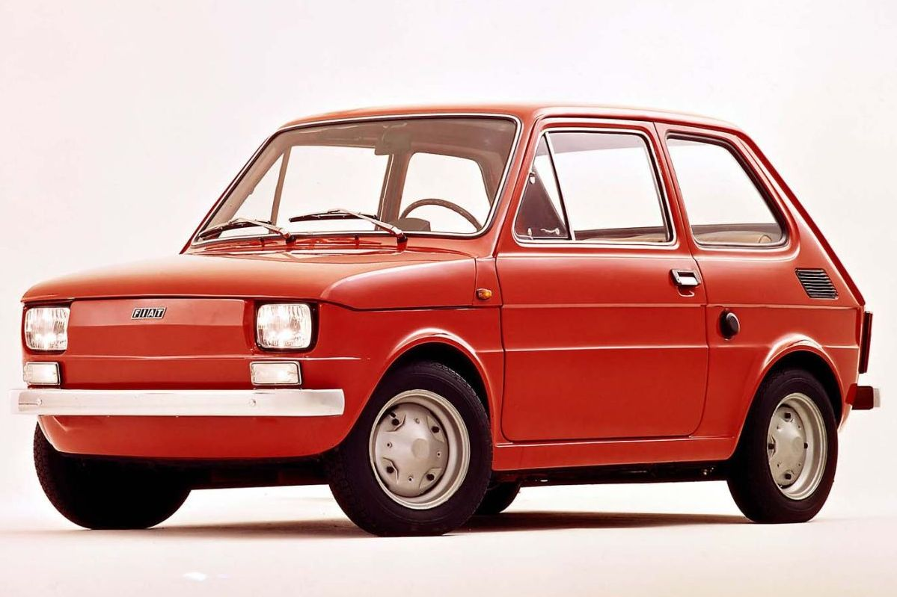
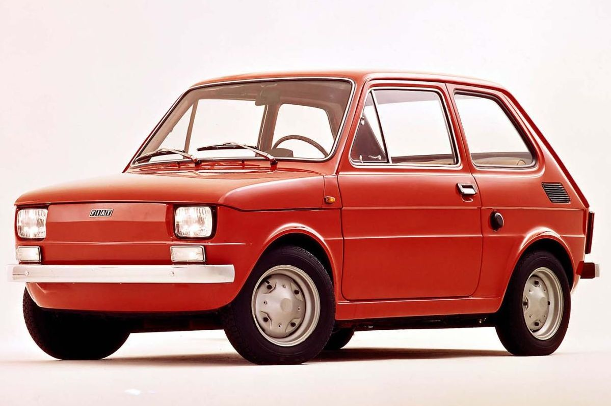
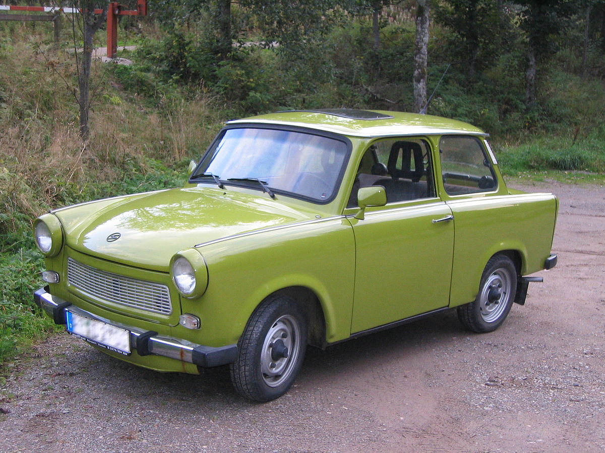
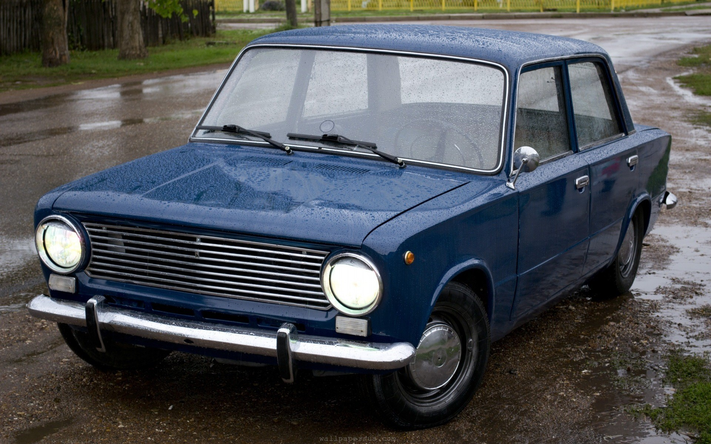

Kispolski
A Polski Fiat egy lengyel autómárka. Ezzel a névvel az olasz Fiat cég licence alapján gyártották és szerelték össze Lengyelországban az ilyen nevű gépjárműveket.
Azok a régi szép idők ...
A Polski Fiat egy lengyel autómárka. Ezzel a névvel az olasz Fiat cég licence alapján gyártották és szerelték össze Lengyelországban az ilyen nevű gépjárműveket.
A Trabant keletnémet gépkocsitípus, melyet a német VEB Sachsenring gyártott. Az első Trabant 1957. november 7-én gurult le a futószalagról, a legelterjedtebb autó volt Kelet-Németországban, és a többi szocialista országba is exportáltak belőle.
A Lada az orosz AvtoVAZ járműgyártó vállalat gépkocsimárkája. A szovjet időszakban ezt a márkanevet csak az exportra szánt járműveknél használták, ugyanazokat a modelleket a belső szovjet piacon Zsiguli márkanéven forgalmazták.
